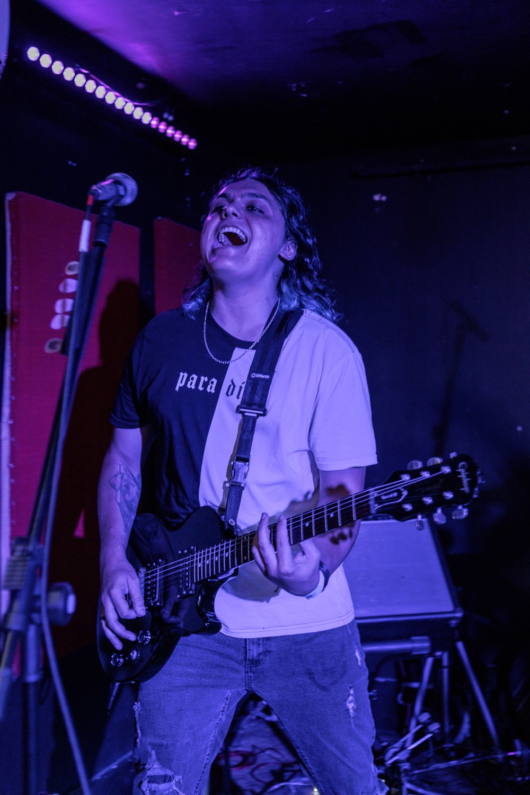
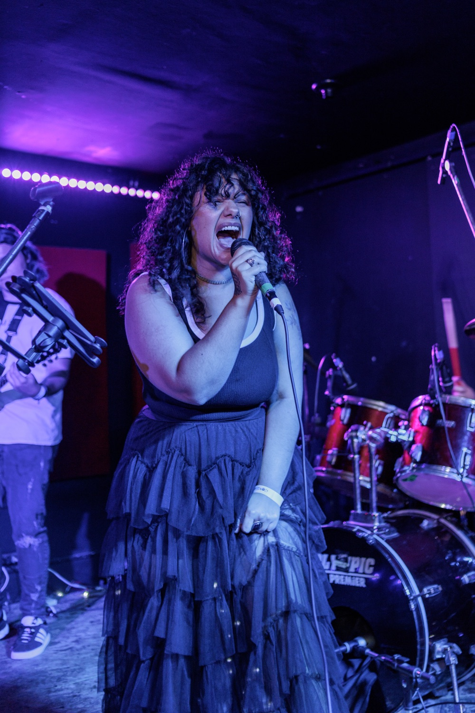
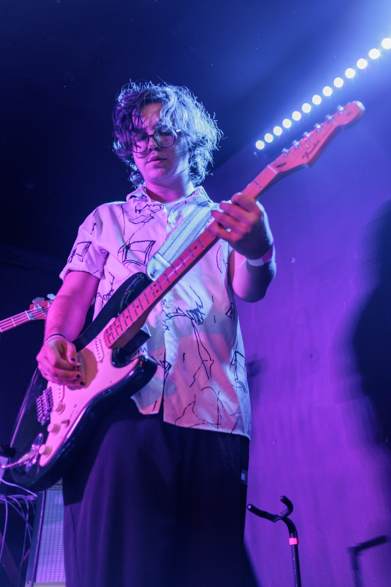
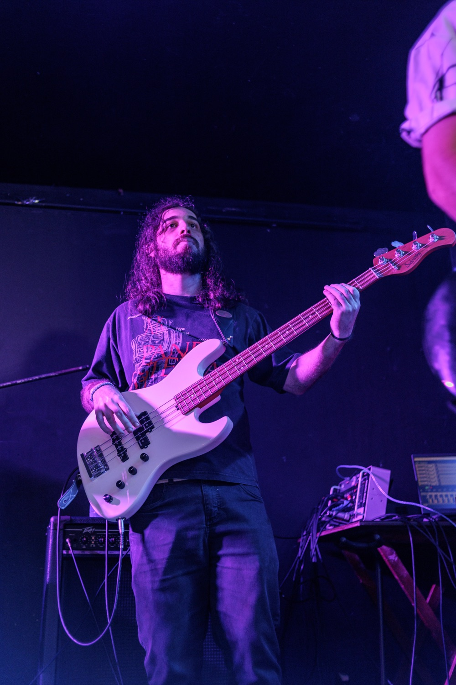

Endy
Guitarra Base
Na guitarra e backing vocal, em projetos musicais desde 2011, indo do peso do Slipknot ao groove do Paramore, vem trazer o tempero pra deixar a noite inesquecível: uma pitada de distorção e muita, muita energia no palco!

Fernanda
Vocal
No vocal, a cacheada que desbrava a voz em diversos nichos musicais, chega com a Piteira pra cantar com o público e encher de emoção!

Gabriel
Guitarra Solo
Na guitarra solo, com a sagacidade de um panda e a energia de um coala, traz mais cores à música através da sua guitarra com muito blues e feeling ✨✨

Lucas
Baixo
No baixo, o maior fã de Pitty que você vai conhecer! Entre riffs pesados e hinos nostálgicos, vem com os graves para fazer o chão tremer!
Bruna
Bateria
Na bateria, a designer que comanda o groove com criatividade e carão, traz a energia necessária pra todo mundo sair do chão!